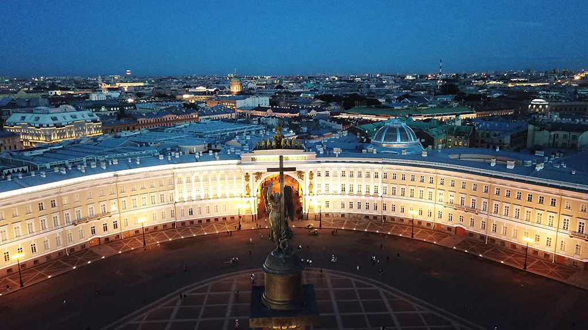

Проведём вас по самым интересным и захватывающим местам СПБ!
Санкт-Петербург — второй по численности населения город России. Город федерального значения. Административный центр Северо-Западного федерального округа. Основан 16 (27) мая 1703 года царём Петром I. В 1714—1728 и 1732—1918 годах — столица Российского государства. Назван в честь святого Петра — небесного покровителя царя-основателя, но со временем стал всё больше ассоциироваться с именем самого Петра I. Город исторически и культурно связан с рождением Российской империи и вхождением России в современную историю в роли европейской великой державы. Расположен на северо-западе страны на побережье Финского залива и в устье реки Невы. Граничит с Ленинградской областью, также имеет морские границы с Финляндией и Эстонией
В Санкт-Петербурге находятся: конституционный суд РФ, геральдический совет при президенте РФ, полпредство Северо-Западного федерального округа, органы власти Ленинградской области, межпарламентская ассамблея СНГ. Также размещены: главное командование ВМФ РФ и штаб западного военного округа ВС РФ. Был центром трёх революций: 1905—1907 годов, Февральской, Октябрьской. В ходе Великой Отечественной войны в 1941—1944 годах 872 дня находился в блокаде, в результате которой погибло около миллиона человек. 1 мая 1945 года Ленинград был объявлен городом-героем. В составе города федерального значения Санкт-Петербурга также находятся 3 города воинской славы: Кронштадт, Колпино и Ломоносов.